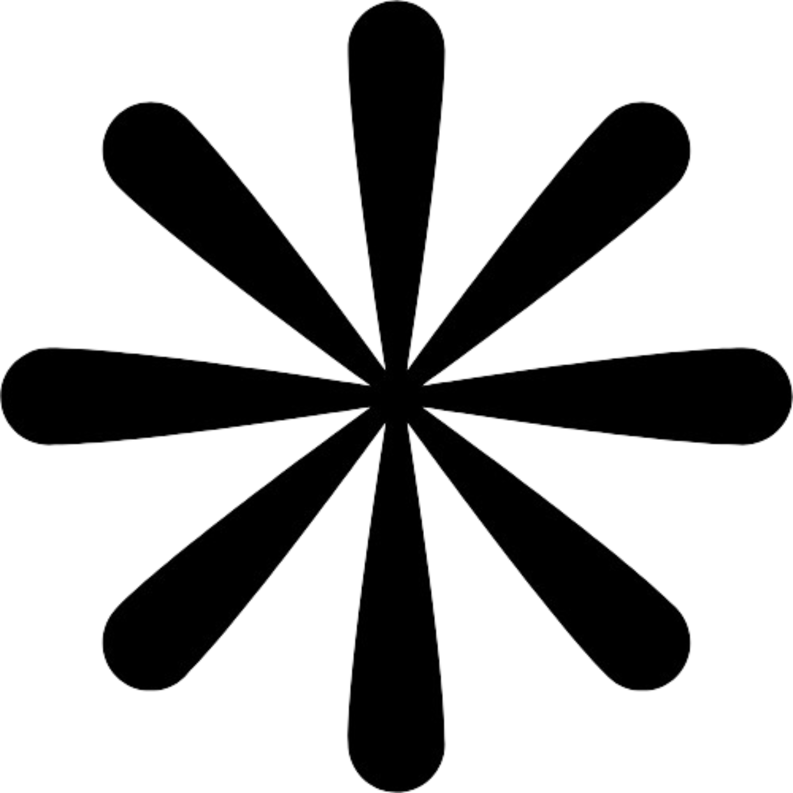

hey! i'm abyan, a 20 y/o super nerd who has crazy dreams
here's what i've been up to:
- currently an FDE at Lyra, cranking for generational startups (backed by giants like YC, a16z, Accel, Blackbird, etc)
- tried starting an AI consulting company while studying at USYD. got interest from key people including C-level execs at Tonkin, OGTEC, and iTemp.
- was a director at PPIA, where i led 15 students to ship our publication platform in 1/5th of the given time.
- previously a SWE at JSW, a startup building autonomous job-applying agentic workflows
- did freelance work doing RAG and n8n automation for small Indonesian businesses.
in life, i want to be useful! i'm always on the outlook for projects i can contribute to. so, hit me up if you're working on something great!
beside my main line of work, i really love to read on a wide range of topics - especially politics, self-improvement, finance, and manga! currently reading the tragedy of great power politics by mearsheimer.
some fun facts:
- hit #3 on the asia minecraft potpvp leaderboard (1512 ELO)
- was a ranked pvp warlord in Wizard101 (1896 ELO), top ~300 on the leaderboard
- became one of the richest players in Pixel Worlds by writing a bot that farmed 24/7 (whoops). i have 3 dark pixies (less than 45 exist!)